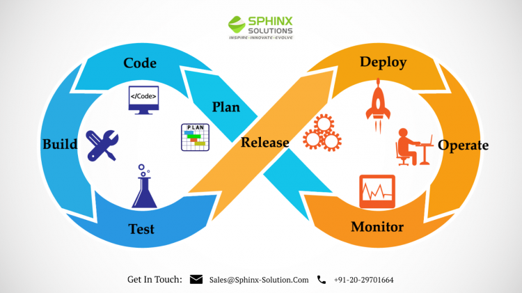

Hello! I'm Joseph Xu, currently pursuing my Master’s in Information Technology. I’m passionate about web development, artificial intelligence, and cybersecurity, and this website showcases my professional portfolio and blog. Here, I share my journey, projects, and recent achievements in technology.
Current Studies
As a Master’s student in Information Technology, I’m focused on advanced coursework in data structures, machine learning, cloud computing, and cybersecurity at [Your University/College]. My studies are a blend of theory and hands-on projects, and I’m always keen to deepen my knowledge in emerging technologies.
Professional Interests
My professional interests include software development, front-end and back-end web design, data analysis, and security engineering. I love exploring innovative ideas, from building intuitive user interfaces to enhancing system security. I'm particularly fascinated by artificial intelligence and its potential to revolutionize tech-driven solutions in the industry.
Career Goals
My career objectives as an IT student center on developing my knowledge of cybersecurity, AI, and software development in order to produce significant technological solutions. In order to create safe, effective, and user-focused applications, I want to improve my technical proficiency in system design and programming. In the end, I hope to spearhead creative initiatives that use AI to solve practical issues, assisting sectors like healthcare, education, and finance in responsibly embracing digital transformation. Achieving these objectives will also require me to keep up with developing technologies and to keep learning new things through certifications and practical experience.
Blog
Recent Post: "Exploring the Intersection of AI and Cybersecurity"
This post dives into the challenges and innovations at the intersection of AI and cybersecurity, exploring how machine learning can improve threat detection and response in today’s digital landscape.
Read more